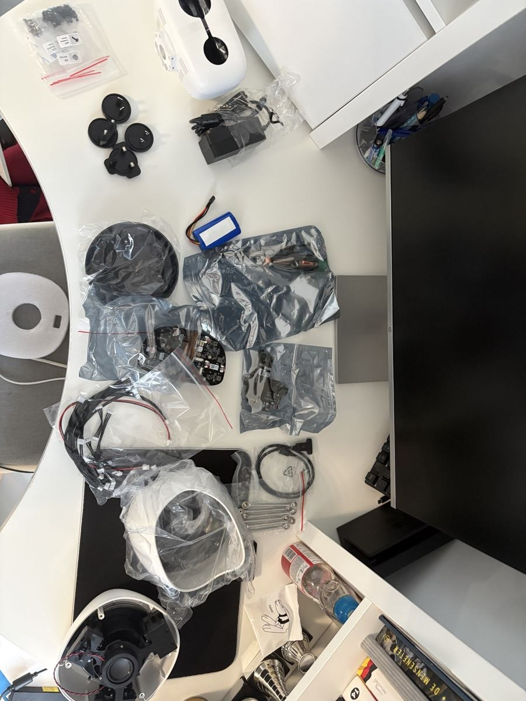
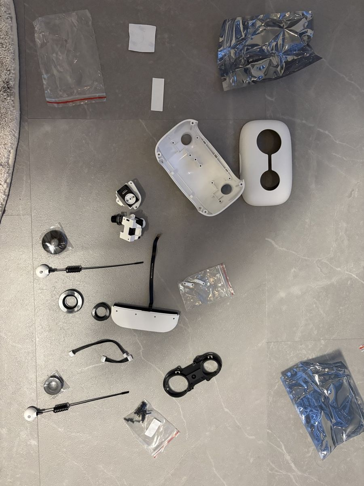

1. Reachy bouwen
Ik wilde de Reachy Mini bouwen, van de doos tot de eerste keer aanzetten.
wo 21 oktober 2026, 14:59 tot 20:13
Wat ik deed
Op woensdag 21 oktober bouwde ik mijn Reachy Mini, de draadloze versie met accu. Ik deed dat stap voor stap met de officiële bouwhandleiding. Die heeft 51 stappen in 7 fases, namelijk voet, voedingsbord en accu, motoren en stangen, kabels en tricap, kop en printplaat, camera en lenzen, antennes en achterkop, en als laatste afwerken en aanzetten.
Alle 51 stappen lukten. Het volledige bouwlog met de tijd per stap staat op mijn bouwpagina.


Probleem. Stap 35, lenzen. De lenzen klikten niet vast. Er zat nog plastic folie op die ik voor een deel van de lens hield.
Oplossing. Ik haalde de folie eraf en daarna klikten ze vast.
Probleem. Stap 49, voorkop. Ik zat lang vast omdat ik het gezichtsplaatje verkeerd om had gezet.
Oplossing. Ik controleerde de richting en draaide het plaatje om.
Probleem. Stap 44, USB-C-kabel. De kabel zat ergens aan vast en ik kon hem niet aansluiten.
Oplossing. Ik schroefde het middenstuk los om hem vrij te maken. De kop hoefde niet eraf.
Probleem. Stap 17, motornummers. Ik had de kabels van motor 1, 2 en 3 verkeerd aangesloten.
Oplossing. Ik las de handleiding opnieuw en paste het aan, want elke motor moet op het juiste nummer.
Probleem. Stap 51, aanzetten. De eerste keer gebeurde er niets.
Oplossing. De tweede keer begon de ventilator en kon ik met mijn laptop verbinden via de Reachy-app.
Wat ik hieruit leer
- Lees de handleiding stap voor stap en vertrouw niet op wat je denkt te weten.
- Een magnetische schroevendraaier en een pincet helpen veel.
- Haast niet met de kabels. De gaten zijn krap en de kabels kort.
- Ik leerde hoe een robot precies praat, beweegt en functioneert.
Bronnen
- Reachy Mini Assembly Guide (51 stappen). https://huggingface.co/spaces/pollen-robotics/Reachy_Mini_Assembly_Guide
- BoKSA, Motors and Actuators (achtergrond bij de motoren). https://boksa.hbo-ict-hva.nl/profiles/embedded-robotica-engineer/knowledge/prototyping/motors-and-actuators/
- Mijn bouwpagina en bouwlog. Bouwlog Reachy en Building the Reachy Mini (Team9 Documentation).
- YouTube-video. https://www.youtube.com/watch?v=WeKKdnuXca4